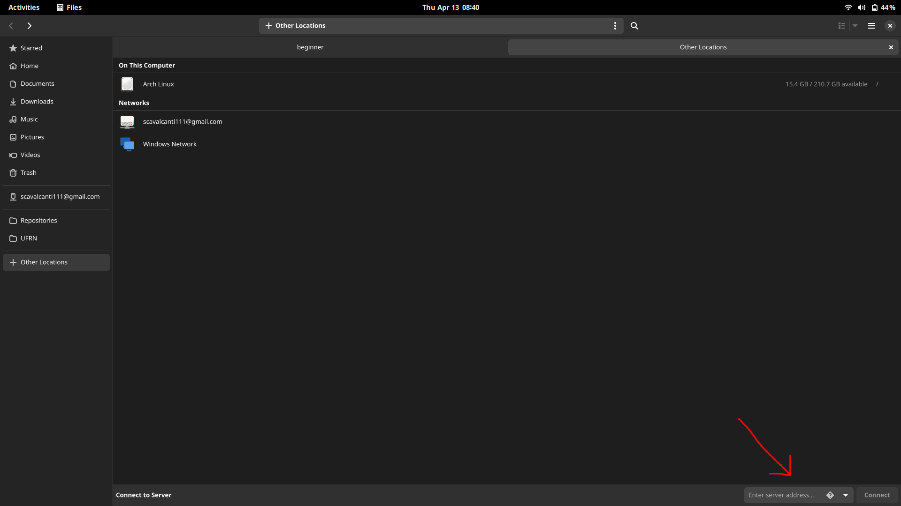
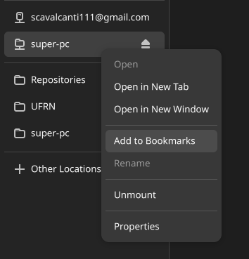

Copiando arquivos através de uma interface gráfica Gnome Files (linux)¶
Gnome é a interface padrão do Ubuntu. Que é distribuição padrão para desenvolvimento do Instituto Metrópole Digital (IMD). Portanto iremos mostrar como conectar o navegador de arquivos padrão do Gnome, chamado Gnome files com os seus arquivos no supercomputador. A versão do Gnome files utilizada é a 43.3

Clique em Other Locations¶
Abra o gestor de arquivos Gnome files e clique em Other Locations como apontado na imagem

Digite o endereço do super pc¶
No canto inferior direito, digite o endereço do supercomputador. No caso o endereço varia de acordo com o seu nome de usuário:
ssh://nomeDoUsuario@sc2.npad.ufrn.br:4422
No entanto caso você tenha configurado o arquivo ~/.ssh/config o endereço pode ser escrito da seguinte forma:
ssh://super-pc

Dica: Adicione nos favoritos¶
Para não precisar ficar refazendo este tutorial, você pode salvar o o endereço do supercomputador nos favoritos, clicando com botão direito do mouse e depois em add to Bookmarks
